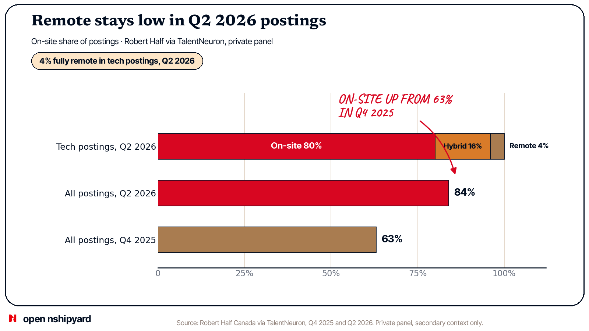

Open Nshipyard data story · Late 2026 · Chart 6 of 7
Remote stays low in Q2 2026 postings, and hybrid is the middle ground
Only 4% of tech postings fully remote, 80% on-site. Only 4% of Canadian technology postings in Q2 2026 were fully remote. Hybrid was 16% and fully on-site was 80%. This is the Q2 2026 share in the Robert Half series. No longer series is shown, so this report makes no record claim.

Source: Robert Half Canada via TalentNeuron, Q4 2025 and Q2 2026. Private panel, secondary context only.

Chart 6 of 7 from The State of the tech job market in Canada (Late 2026), an Open Nshipyard data story. Figures come from public sources, cited with dates; private sources are labelled private.